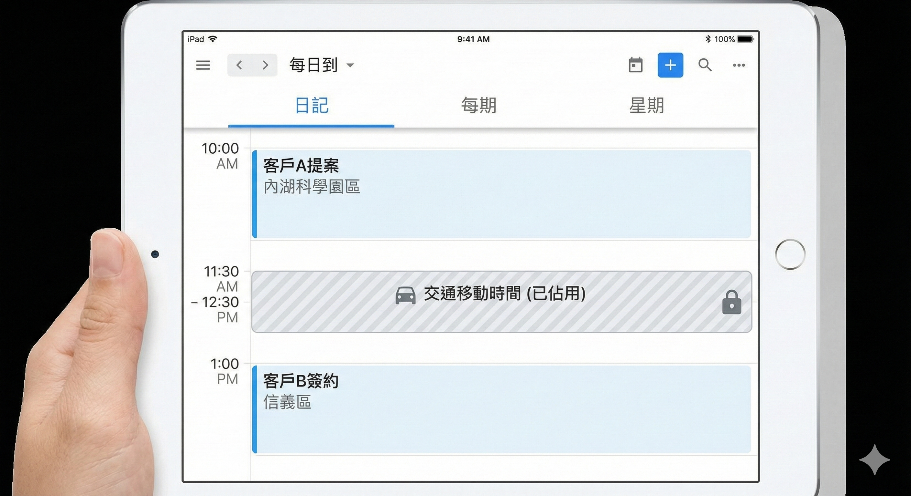

在銷售領域，效率就是你的競爭力。很多業務抱怨時間不夠用，其實是因為你只把行事曆當成「備忘錄」。真正的高手，會利用行事曆預先規劃行駛至目的地的時間，讓每一天的銜接精準無誤。
直接上教學，建議現在就拿起手機、電腦跟著設定。
點擊下方看影片🎦
https://youtu.be/oIhWtelYhwI?si=Ns3K1f2Ef1VVYj4M
事先設定：
裝置的設定 → 隱私權與安全性 → 定位服務 → 行事曆開啟行事曆 App 裡：設定 → 提示 → 「出發時間」
操作步驟：
新增行事曆項目：輸入你的行程名稱。設定詳細地點：這是最關鍵的一步，務必輸入正確的地點。開啟路程時間：這時會出現從上一個地點開始的定位計算。

設定完成後，行事曆會自動幫你把「路程時間」框起來。這代表你在開車或移動的時候，系統會自動幫你佔位，避免你誤設其他行程。只要地點放置正確，路程時間會自動落入行事曆中，確保每一個環節的銜接都非常準確，你完全不需要再手動計算。
最後提醒：行事曆不是備忘錄 使用行事曆不是把你每天該做的事項放上去就結束，身為專業業務，你必須注意三點：
1.「每一個動作的花費時間都要設定」：預估你的工作時間。
2. 「做好行事曆分類」：這能幫你快速分辨重要且緊急的事項。
3.「重複的事項使用重複功能」：減少大腦瑣碎的記憶負擔。
為什麼我推薦 MacBook 搭配手機使用？ 因為生態系的連動效率比單純使用手機高出非常多。如果你每天能透過工具省下一小時，一年就省下了 365 個小時；而這一切只需要花費你三萬多塊的工具投資，這絕對是人生最划算的生意。
商業上常說：「省下的成本才是你真正的利潤，銷售上省下的時間才是你真正的業績。」
「工具也是一種複利效應，不斷突破你的極限。」
「平庸的業務在行事曆上記錄過去，頂尖的業務在行事曆裡預演未來。」
🔧 你的業績卡住了嗎？因為我也走過那段「心累」的路，所以我懂你的痛。如果你想知道...你的「業務原廠設定」是適合開發還是穩定成長？你容易卡在「開發」、「開口」還是「成交」？👇 點擊連結加入 LINE私訊「想知道銷售天賦」，15分鐘幫你找到業務專屬天賦!https://line.me/ti/p/jzdho94spl